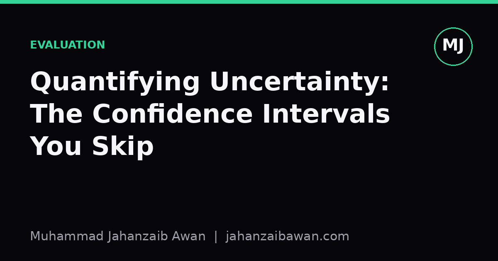

Quantifying Uncertainty: The Confidence Intervals You Skip
A single accuracy number on a test set is a point estimate, not a fact. Here is why the interval around it matters more than the number itself.

The number that hides its own doubt
Every paper and every dashboard I have seen states a metric as though it were carved in stone: accuracy 0.87, F1 0.72, AUC 0.91. What almost none of them state is the range of values that would be equally plausible given the same test set. A single accuracy figure is a point estimate computed from a finite sample, and finite samples carry sampling error. Report the point without the error and you have told the reader a story that sounds far more certain than the evidence supports.
This matters most when models are compared. If model A scores 0.87 and model B scores 0.85 on the same test set, the natural instinct is to declare A the winner. But if the test set has a few hundred examples, that two point gap can sit comfortably inside the noise. Without an interval, we cannot tell whether we are looking at a genuine improvement or a coin flip that happened to land the right way this time.
I think this gets skipped for mundane reasons rather than malicious ones. Computing a confidence interval for accuracy takes an extra step that most tutorials never mention, and leaderboards reward a single clean number more than a range. But the omission has real consequences: teams ship models on the strength of differences that are not statistically distinguishable from noise, and research claims get built on top of comparisons that would not survive a second draw of test data.
A worked example with a small test set
Suppose you evaluate a binary classifier on 300 held-out examples and it gets 261 correct, an accuracy of 0.87. Treat each prediction as a Bernoulli trial, correct or incorrect, and the standard error of that proportion is the square root of p times (1 minus p) divided by n. Plugging in 0.87 and 300 gives a standard error of roughly 0.019. A 95 percent confidence interval, using the normal approximation, is then about 0.87 plus or minus 1.96 times 0.019, which lands somewhere near 0.83 to 0.91.
Now bring in model B, which scores 0.85 on the same 300 examples. Its interval, computed the same way, comes out to roughly 0.81 to 0.89. The two intervals overlap substantially. This does not prove the models are equivalent, but it does mean the data in front of you cannot confidently separate them. Declaring A the better model on this evidence alone is overreach.
Scale the test set up to 3,000 examples with the same accuracy figures and the picture changes. The standard error shrinks by roughly a factor of the square root of ten, so it drops to around 0.006. Model A's interval tightens to about 0.86 to 0.88, and model B's to about 0.84 to 0.86. Now the intervals barely touch, and a two point difference starts to look like a real, reproducible effect rather than noise. The lesson is not that intervals are complicated, it is that the same numeric gap means completely different things depending on how much data produced it.
For metrics that are not simple proportions, such as F1 score, mean average precision, or correlation coefficients, the normal approximation for a proportion no longer applies cleanly. This is where bootstrap resampling earns its keep: resample the test set with replacement many times, recompute the metric on each resample, and take the 2.5th and 97.5th percentiles of the resulting distribution as your interval. It is computationally cheap, makes no strong distributional assumptions, and works for almost any metric you can compute on a sample.

Where the uncertainty actually comes from
It is worth being precise about what a confidence interval computed this way does and does not capture. It quantifies sampling variability, the fact that your test set is one particular draw from a larger population of possible examples. It does not capture uncertainty from label noise, from distribution shift between training and deployment, or from the randomness in training itself, such as different weight initialisations or data shuffling producing different final models. Those are separate sources of variance and they can dwarf the sampling error from the test set.
A model trained five times with different random seeds can easily show a spread of two or three accuracy points purely from training stochasticity, independent of test set size. If you only ever train once and report one number, you have silently assumed that seed variance is zero, which it is not. A more complete evaluation reports both: the confidence interval from the test set size, and the spread across repeated training runs. Together they give an honest picture of how much a headline number should be trusted.
There is also a subtler failure mode worth naming: repeated testing on the same held-out set across many model iterations. Each time you peek at the test set to decide whether a change helped, you are implicitly running a small hypothesis test, and running many such tests inflates the chance of a false positive. A single confidence interval computed once is honest; a confidence interval computed after twenty rounds of tweaking and re-checking against the same test set is quietly optimistic, because you have used the test set to search rather than to confirm.
What to actually do about it
The practical fix does not require a statistics degree. For simple accuracy-like metrics, compute the standard error from the proportion and report a 95 percent interval alongside the point estimate. For anything more complex, bootstrap resampling with a few thousand resamples is enough to get stable percentile intervals, and it is a handful of lines regardless of what library you use. When comparing two models, do not just compare point estimates; check whether their intervals overlap, and where possible run a paired test on the same examples, since a paired comparison controls for the fact that both models were scored on identical data.
The habit worth building is simple: whenever you report a metric, ask what test set size and what sampling process produced it, and whether the difference you are excited about would survive a slightly different draw of the same data. If a two point improvement disappears once you account for interval width, that is not a failure of the model, it is information you needed before making a decision. Reporting the interval is not extra caution for its own sake, it is the difference between a claim and a coincidence.